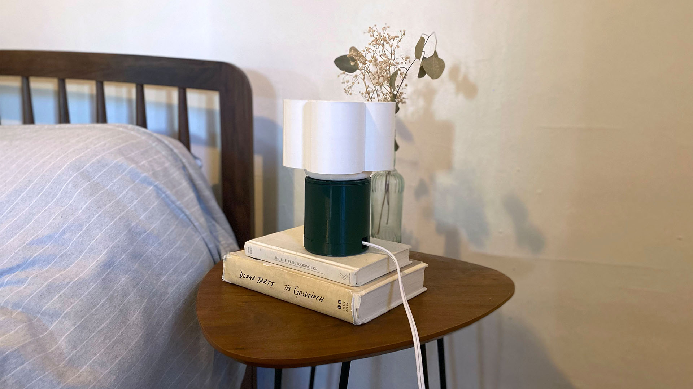 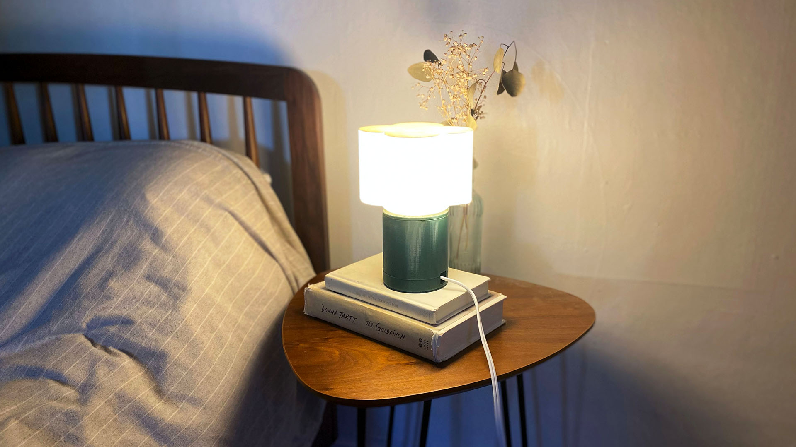
Inspiration
Gantri designs
I discovered Gantri, a lighting company based in San Francisco, that uses 3d printing exclusively to manutfacture their lamps.
They partner with independent product designers and studioes to create minimalist Scandinavian-inspired designs.
With this assignment, I was most excited about the idea of designing and making things that I would have otherwise bought from somewhere else – objects that were both functional and beautiful.
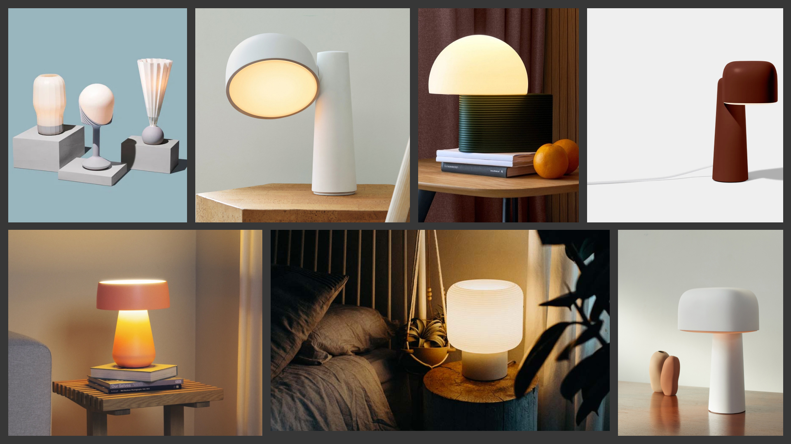Creating a kit of parts
I also referenced this lamp file that I found on Thingiverse. Although the form is fairly simple, I knew that the process of constructing a kit of parts that all fit and held together would be a challenge.
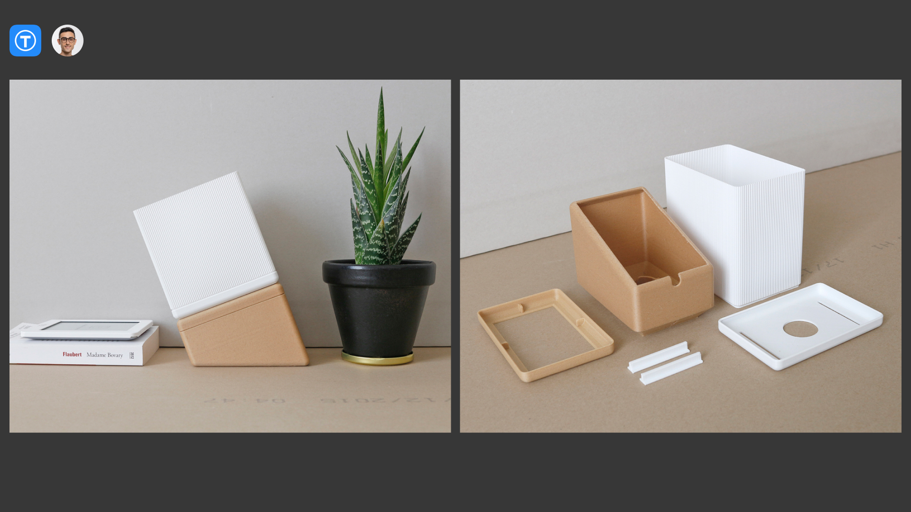Process
Initial idea
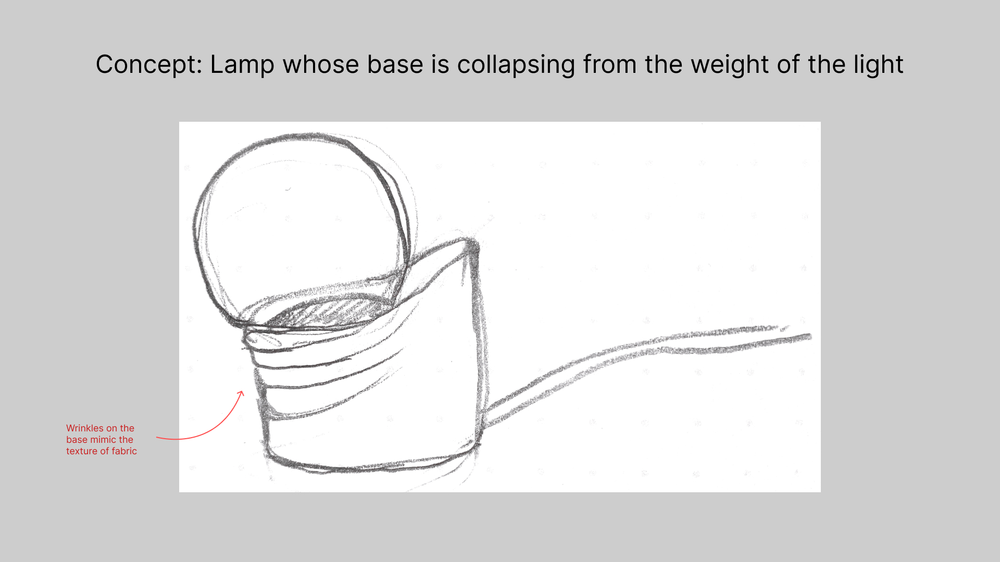This was the sketch of my initial idea: The base of the lamp is collapsing under the weight of the bulb (There’s a metaphor in there somewhere).
I was out of town the first week of the lamp assignment so I had to cram all the steps, from CAD design to printing this past week. When I started to construct this deceptively simple shape.
When I began by measuring my lamp innards and figuring out the dimensions and doing all the math to conceptualize the kit of parts, I decided to reduce the complexity of my project. Creating the parts that snap and hold together would be challenging enough for me, I didn’t want to take on the additional challenge of figuring out how to create and target the wrinkles on the base of the lamp – especially since I didn’t feel comfortable enough with the 3d printing technique. Based on my experience with previous assignments and given my basic understanding of Rhino, I knew that it was wiser to double the time estimate for completing this assignment to account for printing time, errors, and other unanticipated issues.
Simplifying my design
I measured the lamp innards with lightbulb with calipers and documented the measurements. I also used the calipers around its form to envision reasonable dimensions for the base of my lamp and its covering.
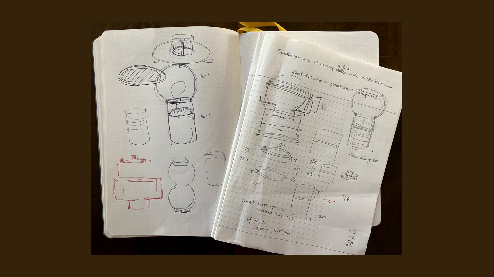In Rhino, I used a intricate concoction of surface, boolean, and transform commands to create the lamp holder, the base of the lamp, the base bottom, the base top, the top base, and the top cover of the lamp.
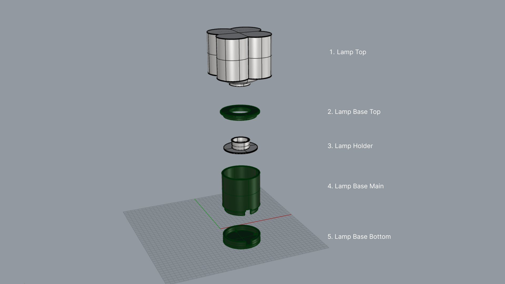Nervous about the time cost and the unpredictability of the design to print translation, I made a few design test prints of the smaller pieces to start and printed short sections of the other pieces to test for fit.
Lots of trial and error to get the measurements right and ensure that the entire lamp could be taken apart and put back together easily. Details like the lamp cord influenced the height and thickness of the lamp base main and bottom.


I learned that I needed to make the gaps in the main base 1.2 times bigger than the dimensions of the bottom protrusions in order for the actual prints to snap together perfectly.
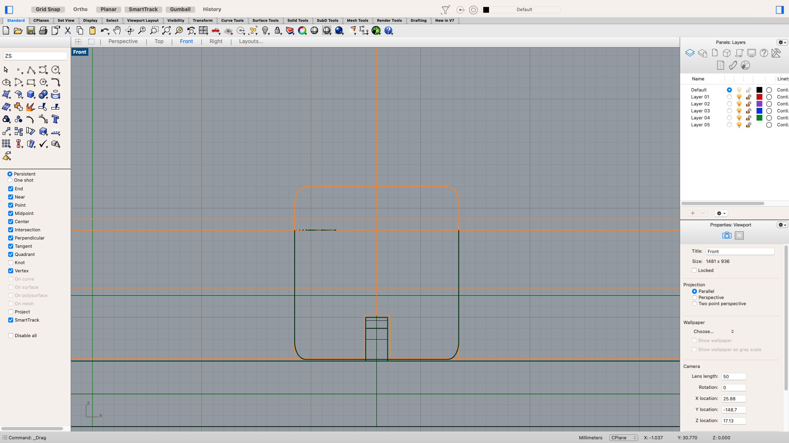 It was so satisfying when all the pieces clicked into place. 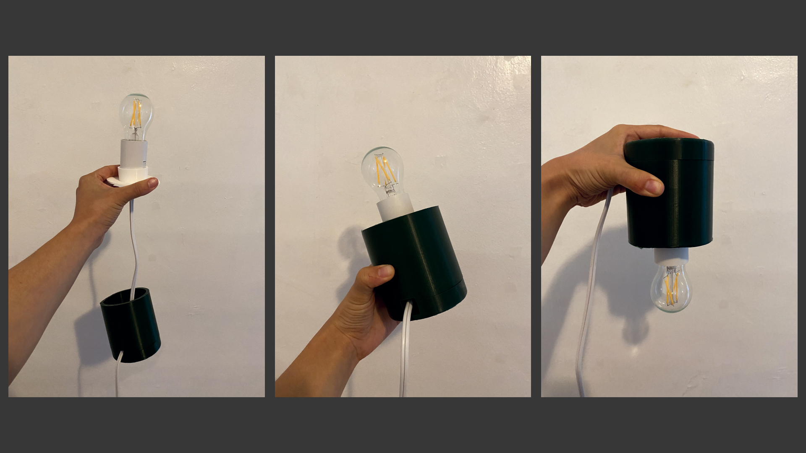Final Lamp
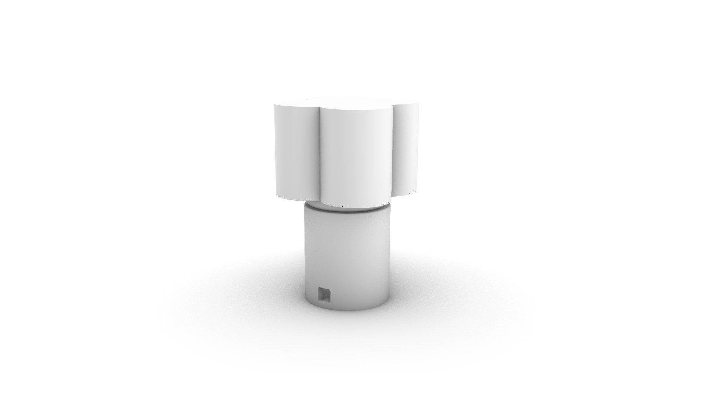 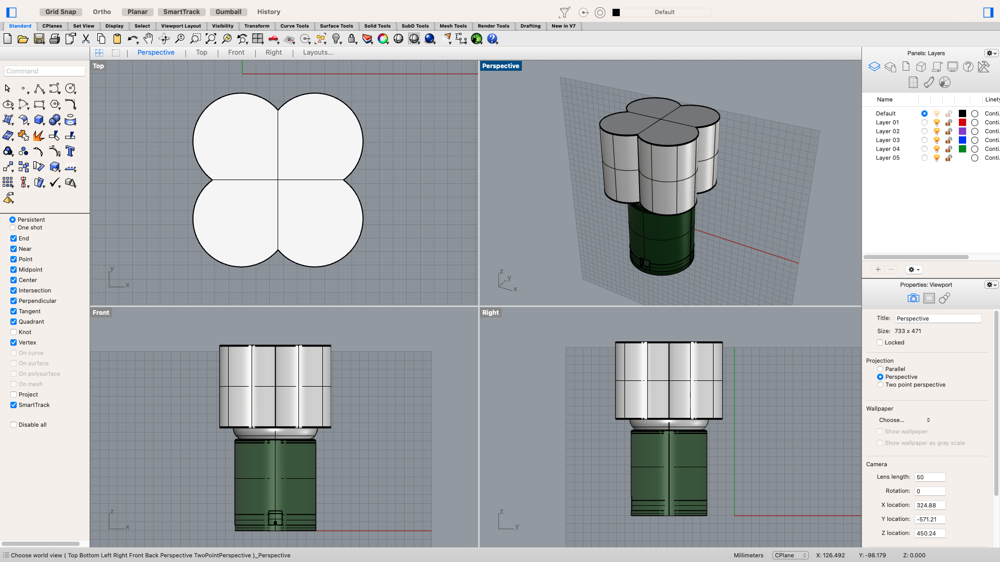I printed at standard quality using default cura settings with brim and support when necessary. The lamp base main alone took around 11 hours to print.
Special Thanks
As always, Junchao!! For teaching me about cantilevers and telling me how to fix my rhino model so cura doesn’t get confused.
Thanks to Noelle for shaving what felt like years of my life by sharing “fast but still good” cura custom settings. I almost weeped when that reduced my print from 12 hours to 6.
Thanks to Sara Cagle for helping me with tips and troubleshooting throughout my project. And for always being there to provide emotional support.
Thanks to everyone who jumps in and asks questions and provides answers in the discord channel! Even just learning about other peoples issues and how they’ve resolved them helps me improve my skills and confidence.